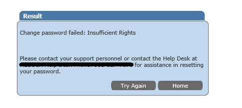
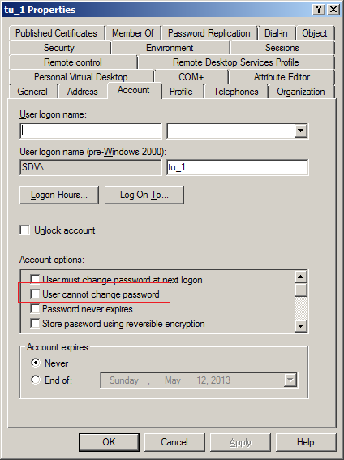

When a user tries to reset the password via Self-Service portal they receive "Access Denied"
error or "Insufficient permissions"

The error occurs when the Password Manager service account does not have enough permissions to perform the requested action.
To resolve the issue: 1. Make sure that the Password manager service account is a domain admin, or at least has required permissions. NOTE. A non-privileged service account is not able to unlock and reset passwords for protected domain groups (domain admins, enterprise admins, etc) because of AdminSDHolder Access control mechanism.
The error occurs when the Password Manager service account does not have enough permissions to perform the requested action.
To resolve the issue: 1. Make sure that the Password manager service account is a domain admin, or at least has required permissions. NOTE. A non-privileged service account is not able to unlock and reset passwords for protected domain groups (domain admins, enterprise admins, etc) because of AdminSDHolder Access control mechanism.
AdminSDHolder is a container inside Active Directory that maintains a master list of
permissions for objects that are members of privileged groups in Active Directory. Access
control prevents access of non-privileged accounts to this container.
Below are some of the protected groups that cannot be handled without domain admin
rights:
- Administrators
- Domain Admins
- Enterprise Admins
- Schema Admins
- Domain Controllers
- Server Operators
More information about it here:
http://blogs.technet.com/b/askds/archive/2009/05/07/five-common-questions-about-adminsdholder-and-sdprop.aspx
2. Make sure the user is allowed to change password: 1. Start
Server Manager and find the user account in
Active Directory Users and Computers, right-click the user and select
Properties. 2. On the Account tab in the
Account options list, make sure that
User cannot change password is NOT selected.
